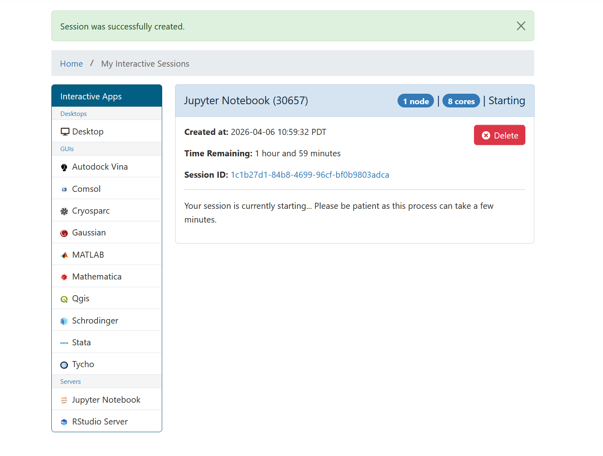
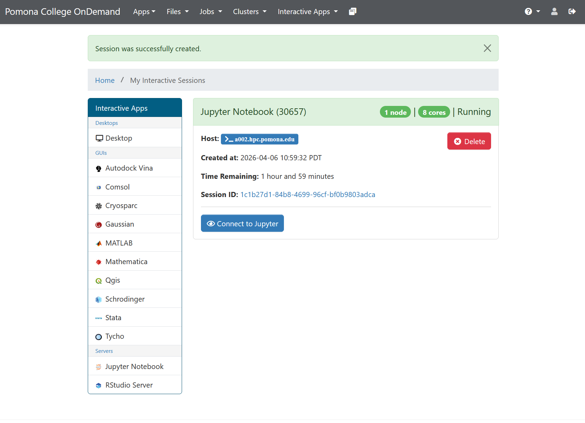
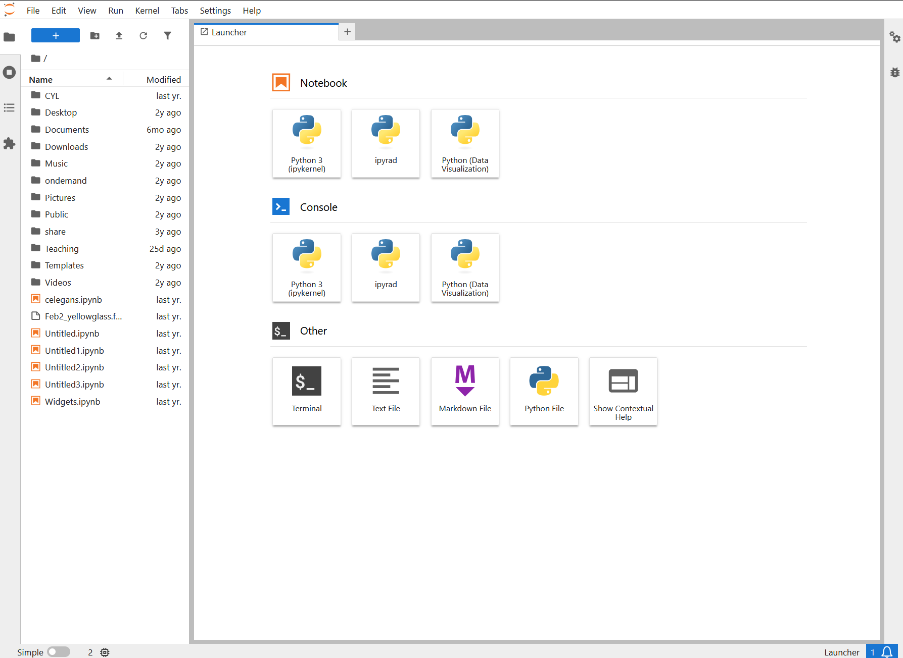
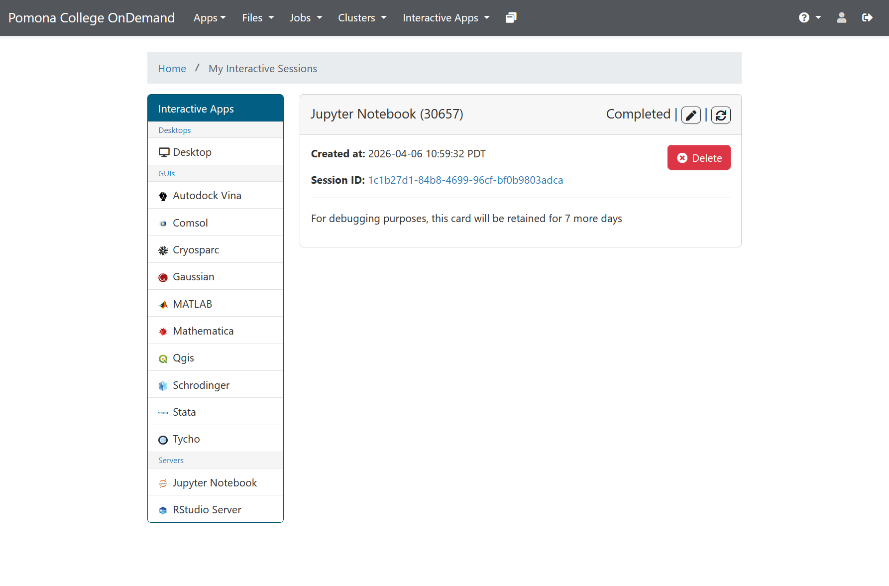
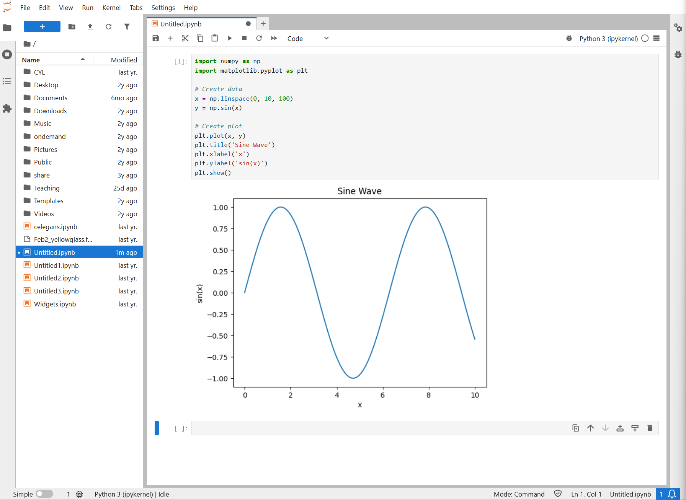
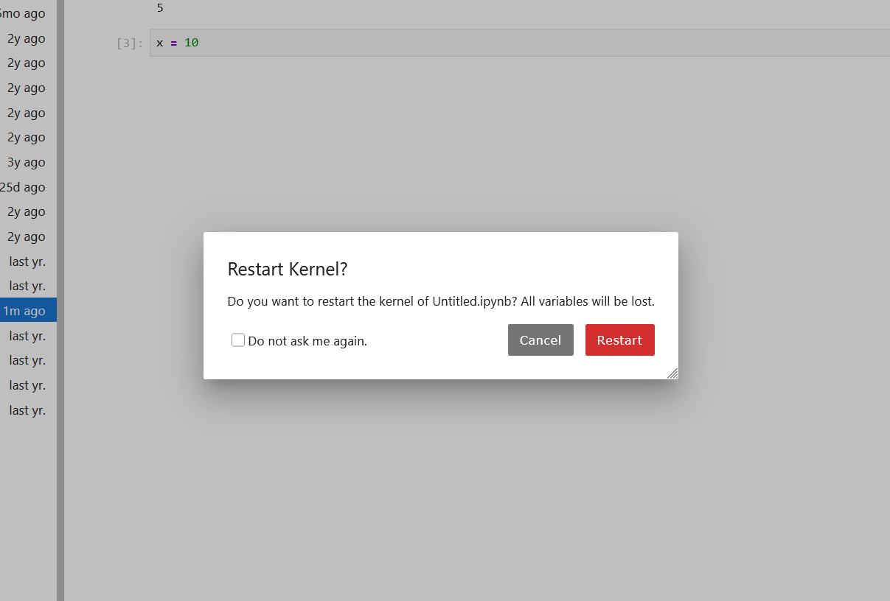
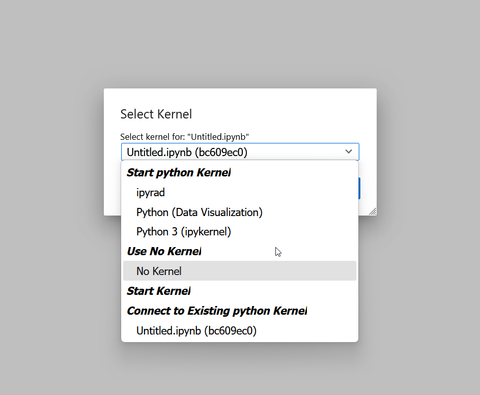
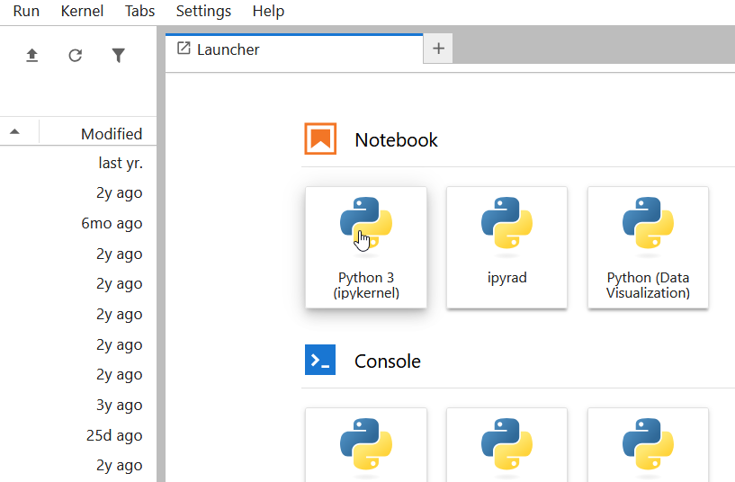

All in One View
Content from What Are Jupyter Notebooks?
Last updated on 2026-08-24 | Edit this page
Estimated time: 20 minutes
Overview
Questions
- What is a Jupyter Notebook?
- Why are Jupyter Notebooks useful for computational research?
- How do Jupyter Notebooks differ from regular Python scripts?
Objectives
- Understand what Jupyter Notebooks are and their key features
- Recognize use cases where Jupyter Notebooks are ideal
- Understand the difference between notebooks and scripts
- Identify when to use notebooks vs. other tools
What is a Jupyter Notebook?
Jupyter Notebook is an open-source web application that allows you to create and share documents containing:
- Live code: Executable Python, R, Julia, and 40+ other languages
- Output: Formatted results, plots, images, tables
- Narrative text: Written explanation in Markdown, including equations
- Visualizations: Plots, charts, and interactive graphics
All of these elements live in a single document, in your web browser, making it easy to explore data, test ideas, and communicate your work.
Where does the name come from?
Jupyter evolved from IPython (Interactive Python), created in 2001 by Fernando Pérez. In 2014, the IPython team created Jupyter Notebooks, extending the interactive concept to include rich output and the notebook format we know today.
The name “Jupyter” comes from the three core languages it originally supported: Julia, Python, and R.
Today, Jupyter supports over 100 languages through different “kernels” (the execution engines that run code), but Python remains the most common.
Anatomy of a Jupyter Notebook
A Notebook is organized into cells, where each cell contains either:
Code cells
PYTHON
import numpy as np
import matplotlib.pyplot as plt
# Create data
x = np.linspace(0, 10, 100)
y = np.sin(x)
# Create plot
plt.plot(x, y)
plt.title('Sine Wave')
plt.xlabel('x')
plt.ylabel('sin(x)')
plt.show()When you run a code cell, the code executes on the kernel (the Python interpreter) and results appear below the cell.
Markdown cells
These contain formatted text, written in Markdown (a simple markup language):
MARKDOWN
# Analysis of Temperature Data
This notebook analyzes temperature measurements from the Sagehen weather station.
## Methods
We collected data every hour from January to March 2024.
## Results
- Mean temperature: 45F
- Maximum: 82F
- Minimum: 18FWhen you run a markdown cell, it displays as formatted text. This lets you combine explanation with code in a single document.
Why Jupyter Notebooks?
Advantages for research
Interactive exploration: Rather than writing a complete script, then running it, then debugging, Jupyter lets you develop code interactively. Run one cell, see results, then modify and run again. This tight feedback loop accelerates discovery.
Reproducible analysis: Your code, results, and explanations live together in one document. This makes it much easier for collaborators to understand what you did and reproduce your work.
Rich output: Plots appear inline below your code. Tables are formatted nicely. Equations can be written in LaTeX. This produces publication-quality results without leaving the notebook.
Easy to learn: Jupyter’s interface is intuitive. You don’t need to know Git, command-line tools, or complex IDEs to get started. For students and researchers new to computing, Jupyter is an excellent entry point.
Shareable: You can save notebooks as
.ipynb files and email them to collaborators. They can open
the same notebook and see your code, output, and explanations. (The
.ipynb format is JSON-based text, so it works with version
control.)
Multiple languages: While we focus on Python in this workshop, Jupyter supports R, Julia, and many others. One user can work in their preferred language in a single environment.
When to use Jupyter vs. other tools
Use Jupyter Notebooks for: - Exploratory analysis (understanding new data) - Interactive visualization and data exploration - Teaching and learning (great for tutorials) - Communicating results to non-technical audiences - Data science and statistical analysis workflows - Prototyping analysis pipelines before scaling with SLURM
Use regular Python scripts for: - Long-running analyses (better for batch jobs via SLURM) - Production pipelines that run unattended - Code that needs to be imported into other programs - Performance-critical code where every millisecond counts - Large analyses that generate thousands of files
Use Jupyter + SLURM together for: - Developing and testing code interactively in Jupyter - When satisfied with the approach, convert to a script - Submit the script as a batch job to SLURM for production - Use Jupyter again to analyze the results
Choosing the right tool
Ask yourself these questions: - Do I need to explore and understand data interactively? Use Jupyter - Will this run for hours unattended? Use a script + SLURM batch job - Do I need to explain my work to non-programmers? Use a Jupyter notebook - Am I just testing an idea quickly? Start in Jupyter, convert to script if needed - Do I need publication-quality visualizations? Jupyter is great for this
The best practice: Start with Jupyter for exploration, then convert to scripts for production work.
Challenge 1: Jupyter Notebook use case evaluation
For each scenario, decide: Is Jupyter Notebook ideal, useful but not perfect, or not recommended? 1. Scenario A: Training a deep neural network on 100 million images that will take 48 hours 2. Scenario B: Exploring a new dataset, creating visualizations, and testing analysis ideas 3. Scenario C: Documenting your lab’s data analysis pipeline for new students 4. Scenario D: Writing production code that multiple applications depend on
For each, write 1-2 sentences explaining your reasoning.
Scenario A: Not recommended. Long-running training jobs are better suited for batch scripts submitted to SLURM (e.g., sbatch). Jupyter notebooks require active browser connections and aren’t designed for unattended 48-hour jobs. Use a Python script with SLURM instead, and use Jupyter afterward to analyze results.
Scenario B: Ideal. This is exactly what Jupyter is designed for. Interactive exploration, immediate feedback, and inline visualizations make it perfect for understanding new data and testing different analysis approaches before committing to a final approach.
Scenario C: Ideal. Jupyter notebooks are excellent for documentation and teaching. A notebook with markdown explanations, working code examples, and output demonstrates the pipeline step-by-step, making it easy for students to learn and adapt the process for their own data.
Scenario D: Not recommended. Production code that other applications depend on should be modular Python files (modules) or packages. Notebooks are harder to import and test, and their state-based execution makes them risky for critical workflows. Convert to .py scripts and use proper software engineering practices.
- Jupyter Notebooks combine code, output, and narrative text in interactive documents
- They’re ideal for exploration, teaching, and communicating research
- Notebooks are great for development but scripts are better for long-running production jobs
- The best practice: Start with Jupyter, convert to scripts when ready to scale
Content from Launching Jupyter on Sagehen
Last updated on 2026-08-24 | Edit this page
Estimated time: 25 minutes
Overview
Questions
- How do I launch Jupyter on the Sagehen cluster?
- What is the OnDemand portal and why use it?
- How do I request the right amount of compute resources?
Objectives
- Understand how the OnDemand portal works
- Successfully launch JupyterLab on Sagehen
- Request appropriate compute resources for your analysis
The OnDemand Portal
Open OnDemand is a web-based interface for accessing HPC clusters. Instead of using SSH and command-line tools, OnDemand provides a graphical interface for:
- Viewing file systems on the cluster
- Launching interactive applications (like Jupyter)
- Monitoring jobs
- Managing files with a web-based file browser
- Terminal access (if needed)
Sagehen’s OnDemand portal is at: https://ondemand.hpc.pomona.edu/
Why OnDemand?
Advantages: - No installation needed on your laptop, works with any web browser - No SSH required, log in with your Pomona credentials - Web interface, no command-line knowledge needed - DUO authentication, secure access with your MFA device - Direct cluster access, Jupyter runs on the cluster, not your laptop - Easy resource management, request CPUs and RAM through simple forms
When you launch Jupyter through OnDemand: 1. OnDemand submits a SLURM job on your behalf 2. The job starts a JupyterLab server on a compute node 3. OnDemand creates a secure tunnel from your browser to that server 4. You see JupyterLab in your browser and can start working
All computation happens on the cluster, all results stay on the cluster (no network overhead).
Step 1: Access OnDemand
- Open a web browser (Chrome, Firefox, Safari, Edge)
- Navigate to: https://ondemand.hpc.pomona.edu/
- You’ll see the Pomona College sign-in page
- Enter your Pomona username and password
- Complete DUO authentication (approve on your phone or enter a code)

- After authenticating, you’ll see the OnDemand dashboard with your pinned apps

Step 2: Launch JupyterLab
Once logged into OnDemand:
- In the top menu bar, click “Interactive Apps”
- Select “Jupyter Notebook” from the dropdown menu

- A form appears asking for resource requests
Step 3: Request Resources
The form asks for several parameters. Here’s what each means:
Number of cores
How many CPU cores do you want? Default is 1, which is fine for learning and small datasets.
Recommendations: - 1 core: Development, testing, interactive work - 2-4 cores: Light data analysis, typical notebooks - 8 cores: Medium datasets, faster computation - 16+ cores: Large-scale analysis (rarely needed for notebooks)
For this workshop: Use 1 core to avoid using cluster resources others need.
Memory (RAM)
How much RAM do you want? Specify in GB.
Recommendations: - 2 GB: Development, testing - 4-8 GB: Typical data analysis (default) - 16-32 GB: Large datasets (thousands of columns) - 64+ GB: Very large in-memory analysis
For this workshop: Use 4 GB (or the default).
Wall time
How long should the job run before automatically stopping? Specify in hours.
Common durations: - 1 hour: Tutorials, learning - 4 hours: Interactive work, exploratory analysis - 8 hours: Long analysis sessions
Important: When your time limit is reached, the Jupyter server automatically stops. You can request a new session if you need more time. Your files are saved on the cluster, so no work is lost.
For this workshop: Use 1 hour (plenty of time for learning).
Partition (optional)
Sagehen has different partitions (queues) for different job types:
- amd (default): Standard CPU partition, 128 cores, 500 GB RAM
- gpu: GPUs available (A100, L40S, RTX PRO 6000) for deep learning
- short: Max 2 hours, for quick jobs
For Jupyter notebooks: Use the default (amd) unless you’re using GPUs.
Workshop settings
For this workshop, use these values:
Number of cores: 1
Memory (GB): 4
Wall time (hours): 1
Partition: amdClick “Launch” and wait. These are conservative settings that will start quickly and give us plenty of resources for learning.
The launch form lets you select partition, Jupyter version, number of hours, CPU cores, and memory:

Challenge 1: Launch JupyterLab
- Open https://ondemand.hpc.pomona.edu/ in your web browser
- Log in with your Pomona credentials + DUO
- Click “Interactive Apps” then “JupyterLab”
- Fill in the form:
- Number of cores: 1
- Memory: 4 GB
- Wall time: 1 hour
- Partition: amd (default)
- Click “Launch” and wait for the server to start
Once JupyterLab appears in your browser, you’ve successfully launched Jupyter on Sagehen! Leave it running for the next episode.
Success indicators: After clicking “Launch”, you’ll see a blue box showing “Your job is starting…” with SLURM job information. After 30 seconds to 2 minutes, this will redirect and you’ll see the JupyterLab interface with: - A left sidebar with file browser and launcher icons - A main area (likely empty since you haven’t opened anything yet) - A top menu bar with File, Edit, View, Run, Kernel menus - A kernel selector showing “Python 3” in the top right
If this doesn’t appear: - Wait up to 5 minutes (cluster might be busy) - Check your internet connection - Try again with fewer resources (fewer cores may start faster) - Contact its-hpc@pomona.edu if stuck
- OnDemand provides a web-based interface for launching Jupyter at https://ondemand.hpc.pomona.edu/
- Request compute resources (cores, memory, time) when launching
- Use conservative settings (1 core, 4 GB, 1 hour) for learning
- The amd partition is the default for standard CPU work
Content from Notebook Interface Basics
Last updated on 2026-08-24 | Edit this page
Estimated time: 25 minutes
Overview
Questions
- What does the JupyterLab interface look like?
- How do I create my first notebook?
- Where does my data live on Sagehen?
- How do I stop my session when done?
Objectives
- Navigate the JupyterLab interface
- Create a new notebook and select a kernel
- Understand where data lives on Sagehen and how to access it
- Stop sessions properly to free cluster resources
Waiting for the Server
OnDemand shows a card with your session status. First you’ll see it in the “Starting” state:

Once the job is running, a green “Connect to Jupyter” button appears:

Click “Connect to Jupyter” to open JupyterLab. This typically takes 30 seconds to 2 minutes from launch to connection.
If it takes longer than 5 minutes
The cluster might be busy. You can: - Wait longer (SLURM may take time to find resources) - Request fewer resources (smaller jobs start faster) - Try later (cluster load varies throughout the day) - Email its-hpc@pomona.edu if it seems stuck
The JupyterLab Interface
Once the server starts, you’ll see the JupyterLab interface with the Launcher tab:

The interface has:
- Left sidebar: File browser, running kernels, Git integration
- Main area: Launcher tab (or notebook/file editor once you open something)
- Menu bar: File, Edit, View, Run, Kernel menus
- Right sidebar (optional): Property inspector, Git, comments
JupyterLab is the modern interface for Jupyter. It’s more powerful than the older “Notebook” interface, with better file browsing and tabbed editing.
Creating Your First Notebook
- In the left sidebar, look for “Notebook” under “Other”
- Click the “+” button or right-click and select “New Notebook”
- A dialog asks: “Select a kernel”. Choose “Python 3 (ipykernel)”
- A new notebook appears in the main area
Congratulations! You now have a blank notebook running on Sagehen.
Understanding Data Storage
Sagehen storage paths
Your Jupyter session has access to all Sagehen storage: -
/rhome/<myusername>: Your home directory (100 GB,
backed up) - /bigdata/lab/<labname>: Lab shared
storage (1 TB, backed up) - /scratch/your_username: Fast
temporary (SSD, not backed up)
Note: /rhome and /bigdata share a 1 TB lab
quota.
In your first notebook cell, you can check your location:
PYTHON
import os
print(os.getcwd()) # Probably /rhome/<myusername>
print(os.listdir('..')) # See files in your homeYou can load data from any of these locations:
Stopping Your Session
When you’re done:
- Save your notebook (Ctrl+S or File then Save)
- Go back to the OnDemand dashboard
- Find your running JupyterLab session
- Click “Delete” to stop the server
This frees cluster resources for others. Your notebook file is automatically saved on Sagehen, so you can access it later.
After your session ends (or you delete it), the OnDemand card shows “Completed”:

Don’t forget to stop your session!
Even if you close your browser without clicking Delete, the session continues running (using cluster resources) until the wall time expires. Always delete your session when done so other users can access those resources.
Connecting Again Later
Your notebooks are saved on Sagehen. To access them again:
- Log into OnDemand again
- Click “Interactive Apps” then “JupyterLab” again
- The new JupyterLab session starts fresh, but your files are still there
- Open any notebook from the file browser
Challenge 1: Explore the file system
In your running JupyterLab session: 1. Look at the left sidebar (the
file browser) 2. Click on the folder icon to navigate 3. You should see
your home directory 4. Create a new folder called
jupyter-workshop (right-click then New Folder) 5. Click on
the folder to open it 6. Create a new notebook: Click “+” then select
“Notebook” then choose “Python 3”
This is your workspace for the rest of the workshop. Save this first
notebook as test.ipynb in your workshop folder.
Step-by-step completion: 1. File
browser: In the left sidebar, you’ll see a folder icon at the
top. Click it to reveal the file browser showing your current directory
(usually /rhome/<myusername>). 2. Create
folder: Right-click in the empty file browser area and select
“New Folder”. Type jupyter-workshop and press Enter. 3.
Navigate to folder: Double-click the
jupyter-workshop folder to open it. You should now see
“jupyter-workshop” in the file path at the top. 4. Create
notebook: In the file browser or main area, click the “+”
button or use File then New then Notebook. When prompted, select “Python
3” or “Python 3 (ipykernel)” kernel. 5. Save notebook:
A new untitled notebook appears in the main area. Click File then Save
Notebook As (or use Ctrl+S). Name it test.ipynb. It will be
saved in your jupyter-workshop folder.
Verification: You should see test.ipynb
appear in the left file browser under jupyter-workshop, and the tab in
the main area should show “test.ipynb” as the active notebook.
Challenge 2: Access cluster data
In your notebook, create a code cell and run:
PYTHON
import os
# Where am I?
print("Current directory:", os.getcwd())
# What can I see?
print("\nHome directory contents:")
print(os.listdir(os.path.expanduser("~")))
# Can I see /bigdata?
print("\n/bigdata contents:")
try:
print(os.listdir("/bigdata"))
except PermissionError:
print("No access to /bigdata (expected if not in a lab group)")This verifies you can access the cluster’s storage. The errors are normal if you’re not in a lab group.
Expected output (varies by username and lab membership):
Current directory: /rhome/<myusername>
Home directory contents:
['Documents', 'Desktop', '.local', '.config', 'Downloads', ...]
/bigdata contents:
['lab1_data', 'lab2_data', ...] # Or PermissionError if not in a labWhat this demonstrates: - Your Jupyter kernel runs
as your user (not root) - You’re currently in your home directory
(/rhome/<myusername>) - You have full read/write
access to your home directory - You can access /bigdata if you’re in a
lab group (if not, that’s normal)
- JupyterLab provides a modern interface with file browser, menus, and tabbed editing
- Create notebooks by clicking “+” and selecting a Python kernel
- Your Jupyter session has full access to Sagehen storage (/rhome, /bigdata, /scratch)
- Always stop your session when done to free cluster resources
- Your notebooks are saved on the cluster, accessible in future sessions
Content from Working with Cells
Last updated on 2026-08-24 | Edit this page
Estimated time: 35 minutes
Overview
Questions
- How do I create and edit cells in a notebook?
- What’s the difference between code cells and markdown cells?
- How do I run cells and understand cell execution?
- Why does execution order matter?
Objectives
- Understand the two main cell types (code and markdown)
- Create, edit, and run cells in different ways
- Understand notebook state and execution order
- Use markdown to add rich formatting and documentation
Cell Types in Jupyter
A notebook is a sequence of cells. Each cell has a type that determines what happens when you run it.

Code cells
Code cells contain executable Python code. When you run a code cell:
- The code is sent to the Python kernel (interpreter)
- Python executes the code
- Any output (print statements, plots, results) appears below the cell
- The code has access to all variables from previously executed cells
Example code cell:
When run, this produces output:
x + y = 15Creating Cells
Creating a new cell
Using the menu: 1. Click the “+” button in the toolbar (or use menu: Insert then Insert Cell) 2. By default, new cells are code cells 3. To change to markdown, click the cell and use the dropdown (shows “Code” by default)
Useful keyboard shortcuts
- Ctrl+Shift+A: Insert cell above current cell
- Ctrl+Shift+B: Insert cell below current cell
- Escape then M: Convert current cell to markdown
- Escape then Y: Convert current cell to code
Choosing cell type
When you create a cell, it defaults to code. To change to markdown:
- Click the cell you want to change
- Look for a dropdown in the toolbar that says “Code”
- Click it and select “Markdown” (or “Raw” for raw text)

Or use the keyboard shortcut: press Escape then M (while the cell is selected)
Running Cells
Run a single cell
Click in a cell and press Ctrl+Enter (Windows/Linux) or Cmd+Enter (Mac).
The cell runs and the cursor stays in that cell.

Understanding Execution Order
A key concept: Cells execute in the order you run them, not necessarily top-to-bottom.
Example:
Cell 1: x = 5
Cell 2: print(x) # If I run this first, I'll get an error!
Cell 3: x = 10 # If I run this after Cell 2, x changes to 10If you run Cell 2, then Cell 3, then Cell 2 again, you’ll get different results.
Cell numbers
Each code cell displays a number like [1],
[2], etc., showing the order in which it was
run, not its position in the notebook.

Best practice
Arrange cells logically (top-to-bottom) and run them in order. Don’t jump around. When in doubt, restart the kernel and run all cells from the top to make sure everything works in sequence.
Challenge 1: Create a multi-cell notebook
In your running JupyterLab session: 1. Create a new notebook 2. In
Cell 1 (code): Import libraries
python import numpy as np import matplotlib.pyplot as plt
3. Press Shift+Enter (create new cell and move to it) 4. In Cell 2
(markdown): Add a title ``` # My First Analysis
This notebook demonstrates basic cell operations.
5. Run that markdown cell (Ctrl+Enter) 6. Create Cell 3 (code): Create datapython
x = np.linspace(0, 2*np.pi, 100) y = np.sin(x)
7. Create Cell 4 (code): Plot the datapython plt.plot(x, y)
plt.title(‘Sine Wave’) plt.xlabel(‘x’) plt.ylabel(‘sin(x)’) plt.show()
```
Run all cells. You should see a plot appear below Cell 4.
Expected notebook structure and behavior:
[1] import numpy as np
import matplotlib.pyplot as plt
(Cell runs successfully with no output)
# My First Analysis
This notebook demonstrates basic cell operations.
(Displays as formatted heading and text)
[2] x = np.linspace(0, 2*np.pi, 100)
y = np.sin(x)
(Cell runs successfully with no output)
[3] plt.plot(x, y)
plt.title('Sine Wave')
plt.xlabel('x')
plt.ylabel('sin(x)')
plt.show()
(Cell displays a smooth sine wave plot)This demonstrates the power of notebooks: code, formatted text, and visualizations all in one document!
Challenge 2: Test execution order
In the same notebook: 1. Create a new cell at the end:
python print(f"x has {len(x)} points") print(f"y ranges from {y.min():.2f} to {y.max():.2f}")
2. Run this cell. It works because x and y were defined earlier. 3. Now,
restart the kernel: Click Kernel then Restart
Kernel then Restart 4. Try to run the last
cell again without running the previous cells. 5. You’ll get a
NameError because x and y no longer exist. 6. Now, click
Run then Run All Cells (to run from
the beginning) 7. The error is fixed because all cells ran in order.
This demonstrates why execution order and kernel state matter!
Before restarting: Cell prints
x has 100 points and
y ranges from -1.00 to 1.00.
After restarting, running only the last cell: You
see NameError: name 'x' is not defined because restarting
the kernel clears all variables from memory.
After Run All Cells: Everything works again because Cell 1 defined numpy, Cell 3 created x and y, so the final cell can access them.
Key lesson: Cells depend on each other through kernel state (shared variables). Always run cells top-to-bottom or use “Run All Cells” to ensure dependencies are met.
- Notebooks contain code cells (executable) and markdown cells (formatted text)
- Cells run in the order you execute them, not necessarily top-to-bottom
- The kernel maintains state (variables, imports) across cells
- Always arrange cells logically and run them in order
- Each cell should do one thing; keep cells focused and manageable
Content from Python Fundamentals in Notebooks
Last updated on 2026-08-24 | Edit this page
Estimated time: 30 minutes
Overview
Questions
- How do I write Python code in notebooks?
- How do I import and use common data science libraries?
- How do I load data from CSV and other formats?
- What’s special about IPython magic commands?
Objectives
- Write and execute Python code in notebook cells
- Import and use NumPy, pandas, and matplotlib
- Load data from CSV and other file formats
- Use IPython magic commands for enhanced functionality
Python in Jupyter
Jupyter notebooks run Python code almost identically to regular Python scripts, but with some enhancements. Let’s explore the main differences and capabilities.
Basic Python syntax
Standard Python works as expected:
PYTHON
# Variables and types
name = "Alice"
age = 30
scores = [85, 92, 78, 95]
data_dict = {"name": "Bob", "age": 25}
# Loops and conditionals
for score in scores:
if score >= 90:
print(f"{score} is excellent!")
# Functions
def calculate_average(values):
return sum(values) / len(values)
avg = calculate_average(scores)
print(f"Average: {avg:.2f}")This all works in Jupyter exactly as it would in a script.
Importing Libraries
Most data science work relies on libraries. Common ones:
pandas (data manipulation)
PYTHON
import pandas as pd
# Create a DataFrame (like an Excel table)
data = {
'name': ['Alice', 'Bob', 'Carol'],
'age': [30, 25, 28],
'salary': [50000, 45000, 55000]
}
df = pd.DataFrame(data)
# Access columns
print(df['name'])
# Statistics
print(df.describe())
# Filter rows
high_earners = df[df['salary'] > 50000]Loading Data from Files
A typical workflow: Load data from CSV (or other formats) and explore it.
From CSV files
PYTHON
import pandas as pd
# Load CSV file (use full path for clarity)
df = pd.read_csv('/rhome/<myusername>/data/experiments.csv')
# See first few rows
print(df.head())
# Get information about the DataFrame
print(df.info())
# Summary statistics
print(df.describe())
# Check shape (rows, columns)
print(f"Data has {df.shape[0]} rows and {df.shape[1]} columns")IPython Magic Commands
Jupyter uses IPython (Interactive Python), which
includes special commands called “magic” commands. These start with
% (line magic) or %% (cell magic).
Output Handling
By default, Jupyter only displays the last output in a cell. To display multiple outputs:
PYTHON
# Method 1: Use print()
print("First output")
print("Second output")
# Method 2: Use display()
from IPython.display import display
display("First output")
display("Second output")
# Method 3: Semicolon suppresses output
x = 5
y = 10
z = x + y; # Semicolon suppresses outputChallenge 1: Load and explore data
-
Create a new notebook cell and load some sample data:
-
In subsequent cells, explore the data:
- Print
df.head()to see first rows - Print
df.info()to see data types - Print
df.describe()for statistics - Calculate mean temperature and humidity
- Print
Document each step with markdown cells explaining what you’re doing.
Cell 1 (Markdown):
Cell 2 (Code): Create the dataset (code above).
Cell 3 (Code):
Cell 4 (Code):
Cell 5 (Code):
PYTHON
mean_temp = df['temperature'].mean()
mean_humidity = df['humidity'].mean()
print(f"Mean temperature: {mean_temp:.2f} F")
print(f"Mean humidity: {mean_humidity:.2f}%")Expected output includes a nicely formatted table with dates, temperatures (around 65F), humidity (around 60%), and wind speeds, followed by calculated means.
- Python code runs normally in Jupyter cells, with enhanced display capabilities
- NumPy, pandas, and matplotlib are the core data science libraries
- pandas can load data from CSV, Excel, JSON, HDF5, and many other formats
- Magic commands (% and %%) add special IPython functionality like timing code
- Use print() or display() to show multiple outputs from a single cell
Content from Data Analysis in Notebooks
Last updated on 2026-08-24 | Edit this page
Estimated time: 45 minutes
Overview
Questions
- How do I explore and summarize data in a notebook?
- How do I select, filter, and modify data with pandas?
- How do I work with data stored on Sagehen?
- How do I keep a notebook reproducible as analysis grows?
Objectives
- Explore datasets using pandas summary methods
- Select, filter, and transform data
- Modify DataFrames with new columns, sorting, and deduplication
- Work with data on Sagehen’s storage systems
- Apply notebook hygiene that keeps analysis reproducible
Why Data Analysis in Notebooks Matters for HPC
Most HPC research starts with a dataset and an investigator who needs to figure out what is in it before deciding how to scale the analysis. Notebooks shine in this exploratory phase because the unit of work is one cell at a time: load, look, plot, decide, adjust. The friction of switching between code and inspection is gone, which means more experiments per hour and faster discovery of the surprises that always live in real data.
The patterns in this episode are equally useful at the small scale (a 100 MB CSV in a notebook on the login node) and the large scale (a 50 GB Parquet dataset that drives a SLURM training job later). Learning them in the notebook context first means you bring the same vocabulary to the cluster.
Exploring Data
Once you have loaded a dataset, the first hour of any analysis is exploration. Pandas exposes a small vocabulary that, used in order, will tell you almost everything you need to know about a new dataset:
PYTHON
import pandas as pd
df = pd.read_csv('data.csv')
# First rows
print(df.head(10))
# Last rows
print(df.tail())
# Data types
print(df.dtypes)
# Missing values
print(df.isnull().sum())
# Unique values in a column
print(df['category'].unique())
# Value counts
print(df['category'].value_counts())
# Statistics by group
print(df.groupby('category')['value'].mean())
# Correlation matrix
print(df.corr())A useful habit: in your first cell after loading, always print
df.shape, df.dtypes, and
df.isnull().sum(). The shape tells you whether the load
worked. The dtypes catch the most common pandas surprise (numeric column
read as object because of one row with stray text). The null count tells
you whether to plan for missing-value handling before any analysis.
When pandas hits its limits on Sagehen
The login node has plenty of memory for most pandas work, but it is shared with every other user. A 20 GB DataFrame load on the login node hurts everyone. Two thresholds to remember:
If the file is under ~2 GB, load it directly in your login-node notebook.
If the file is between 2 and 50 GB, launch your Jupyter session
inside an interactive SLURM allocation:
srun --partition=short --time=02:00:00 --mem=64G --pty bash,
then start jupyter from there.
If the file is over 50 GB, switch to Dask (covered in Workshop 17). Pandas will not fit it in memory.
Selecting Data
PYTHON
# Select a column
ages = df['age']
# Select multiple columns
subset = df[['name', 'age', 'salary']]
# Filter rows (age > 25)
young_workers = df[df['age'] > 25]
# Filter multiple conditions
expensive_experienced = df[(df['salary'] > 50000) & (df['age'] > 30)]
# Select by position
first_row = df.iloc[0]
first_5_rows = df.iloc[:5]
# Select by label
row_by_name = df.loc[df['name'] == 'Alice']The two indexers .loc and .iloc look
similar but mean different things. .loc selects by label
(the index value or a boolean mask), .iloc selects by
integer position. When you reset an index after filtering, integer
positions stay sequential but labels can have gaps; mixing them up is a
frequent source of confusing bugs.
For boolean filtering with multiple conditions, parentheses are
required around each condition.
df[df['a'] > 0 & df['b'] > 0] is a syntax error
trap because & binds tighter than >.
Write df[(df['a'] > 0) & (df['b'] > 0)]
instead.
Modifying Data
PYTHON
# Add a new column
df['years_employed'] = df['age'] - 22
# Rename columns
df.rename(columns={'old_name': 'new_name'}, inplace=True)
# Replace values
df['status'] = df['status'].replace('active', 'employed')
# Remove duplicates
df = df.drop_duplicates()
# Sort by column
df_sorted = df.sort_values('salary', ascending=False)
# Drop columns
df = df.drop(columns=['unwanted_col'])Notebook hygiene tip: every modification cell should produce output
you can verify. After drop_duplicates, print
len(df) to confirm the new size. After rename,
print df.columns. Silent mutations are how notebook bugs
survive into the SLURM job that fails three hours into a long run.
Working with Sagehen Data
A typical analysis workflow on Sagehen
PYTHON
import pandas as pd
import matplotlib.pyplot as plt
import numpy as np
# Load data from /bigdata (lab shared storage)
df = pd.read_csv('/bigdata/lab/<labname>/experiments_2024.csv')
# Explore
print(f"Shape: {df.shape}")
print(df.info())
print(df.describe())
# Analyze
results = df.groupby('condition')['response'].agg(['mean', 'std'])
print(results)
# Visualize
plt.figure(figsize=(10, 6))
results['mean'].plot(kind='bar', yerr=results['std'])
plt.title('Response by Condition')
plt.xlabel('Condition')
plt.ylabel('Mean Response')
plt.tight_layout()
plt.show()
# Save results back to lab storage (NOT /scratch, which gets cleaned)
results.to_csv('/bigdata/lab/<labname>/results/condition_summary.csv')
print("Analysis complete!")Three small details in that workflow are worth pulling out. Source
data lives in /bigdata/lab/<labname>/, which is your
lab’s persistent 1 TB allocation. Final results go back to
/bigdata, not /scratch, because
/scratch is wiped without backups. Plots are produced
inline in the notebook so reviewers can re-run cell by cell and
reproduce them.
Jupyter Display Options
Notebooks have rich display capabilities beyond simple print output:
PYTHON
from IPython.display import HTML, Markdown, Image
# Display HTML
HTML("<h1>Hello</h1>")
# Display markdown
Markdown("# Heading\n\nSome text")
# Display images
Image(url='https://example.com/image.png')The most useful of these in practice is display(df) for
nicely-formatted DataFrames and Markdown for inline section
headers when you want narrative inside a long analysis notebook. For
final analyses you plan to share, Markdown cells alongside
code make a notebook readable as a written report.
Challenge 1: Data manipulation
Using the weather data from the previous episode (or create it fresh):
PYTHON
import pandas as pd
import numpy as np
np.random.seed(42)
df = pd.DataFrame({
'date': pd.date_range('2024-01-01', periods=100),
'temperature': np.random.normal(65, 10, 100),
'humidity': np.random.normal(60, 15, 100),
'wind_speed': np.random.exponential(5, 100)
})- Filter the data to rows where temperature > 70F
- Calculate statistics (mean, std, min, max) for filtered data
- Create a new column called ‘wind_category’ that labels wind speeds
as:
- ‘light’ if < 5
- ‘moderate’ if 5-10
- ‘strong’ if > 10
- Count how many observations fall into each wind category
PYTHON
# Step 1: Filter to rows where temperature > 70F
warm_days = df[df['temperature'] > 70]
print(f"Number of days with temperature > 70F: {len(warm_days)}")
# Step 2: Calculate statistics for filtered data
print("\nStatistics for warm days (temp > 70F):")
print(f"Mean temperature: {warm_days['temperature'].mean():.2f} F")
print(f"Std deviation: {warm_days['temperature'].std():.2f} F")
print(f"Min: {warm_days['temperature'].min():.2f} F")
print(f"Max: {warm_days['temperature'].max():.2f} F")
# Step 3: Create wind_category column
df['wind_category'] = pd.cut(df['wind_speed'],
bins=[0, 5, 10, float('inf')],
labels=['light', 'moderate', 'strong'],
right=False)
# Step 4: Count observations in each category
print("\nWind speed category counts:")
wind_counts = df['wind_category'].value_counts().sort_index()
print(wind_counts)Key pandas techniques: -
df[df['temperature'] > 70]: Boolean filtering to select
rows meeting a condition - .mean(), .std(), .min(), .max():
Statistical functions on columns - pd.cut(): Binning
continuous values into categories - .value_counts():
Counting occurrences of each category
Challenge 2: Group-Then-Plot
Using the weather DataFrame from the previous challenge, group by
wind_category and compute the mean temperature in each
category. Make a bar chart of the result with error bars (standard
deviation). Save the chart to
/bigdata/lab/<labname>/figures/temp_by_wind.png.
PYTHON
import matplotlib.pyplot as plt
stats = df.groupby('wind_category')['temperature'].agg(['mean', 'std'])
print(stats)
plt.figure(figsize=(8, 5))
stats['mean'].plot(kind='bar', yerr=stats['std'], capsize=4)
plt.ylabel('Mean temperature (F)')
plt.title('Temperature by wind category')
plt.tight_layout()
plt.savefig('/bigdata/lab/<labname>/figures/temp_by_wind.png', dpi=150)
plt.show()The capsize=4 adds visible end caps to error bars.
dpi=150 is enough for a presentation slide; bump to 300 for
print-quality figures.
- Always inspect shape, dtypes, and null counts as the first cell after loading
- Use
.locfor label-based selection and.ilocfor position-based; mixing them is a common bug - Boolean filters with multiple conditions need parentheses:
df[(a) & (b)] - For files over 2 GB, do exploratory work in an interactive SLURM allocation, not on the login node
- Save final results to /bigdata, not /scratch (which is wiped without backups)
- Notebook hygiene: every modification cell should produce verifiable output
Content from Visualization in Notebooks
Last updated on 2026-08-24 | Edit this page
Estimated time: 25 minutes
Overview
Questions
- How do I create plots and visualizations in Jupyter?
- What types of plots are available with matplotlib?
- How do I create multi-panel figures with subplots?
Objectives
- Create line plots, scatter plots, histograms, and bar charts
- Customize plots with titles, labels, colors, and legends
- Create multi-panel figures using subplots
- Understand how inline plotting works in notebooks
Inline Visualizations
Jupyter excels at inline visualizations. Plots appear right below code cells. Here’s an example of a matplotlib sine wave plot rendered inline in a notebook:

Line Plots
PYTHON
import matplotlib.pyplot as plt
import numpy as np
x = np.linspace(0, 10, 100)
y = np.sin(x)
plt.figure(figsize=(10, 6)) # Width x Height in inches
plt.plot(x, y, label='sin(x)')
plt.plot(x, np.cos(x), label='cos(x)')
plt.xlabel('x')
plt.ylabel('y')
plt.title('Sine and Cosine')
plt.legend()
plt.grid(True)
plt.show()Scatter Plots
Histograms
Bar Plots
Subplots
Create multi-panel figures for comparing visualizations:
PYTHON
import matplotlib.pyplot as plt
import numpy as np
fig, axes = plt.subplots(2, 2, figsize=(12, 10))
x = np.linspace(0, 10, 100)
axes[0, 0].plot(x, np.sin(x))
axes[0, 0].set_title('Sine')
axes[0, 1].plot(x, np.cos(x))
axes[0, 1].set_title('Cosine')
axes[1, 0].plot(x, x**2)
axes[1, 0].set_title('Quadratic')
axes[1, 1].plot(x, np.exp(-x))
axes[1, 1].set_title('Exponential Decay')
plt.tight_layout()
plt.show()Challenge 1: Create visualizations
Using the weather data (create it fresh if needed):
PYTHON
import pandas as pd
import numpy as np
np.random.seed(42)
df = pd.DataFrame({
'date': pd.date_range('2024-01-01', periods=100),
'temperature': np.random.normal(65, 10, 100),
'humidity': np.random.normal(60, 15, 100),
'wind_speed': np.random.exponential(5, 100)
})Create a figure with 3 subplots side by side: 1. A line plot of temperature over time 2. A scatter plot of temperature vs humidity 3. A histogram of wind speeds
Customize each plot with titles, labels, and colors.
PYTHON
import matplotlib.pyplot as plt
fig, axes = plt.subplots(1, 3, figsize=(15, 4))
# Subplot 1: Line plot of temperature over time
axes[0].plot(df['date'], df['temperature'], color='red', linewidth=2)
axes[0].set_title('Temperature Over Time', fontsize=12, fontweight='bold')
axes[0].set_xlabel('Date')
axes[0].set_ylabel('Temperature (F)')
axes[0].grid(True, alpha=0.3)
axes[0].tick_params(axis='x', rotation=45)
# Subplot 2: Scatter plot of temperature vs humidity
axes[1].scatter(df['temperature'], df['humidity'], alpha=0.6, color='blue', s=50)
axes[1].set_title('Temperature vs Humidity', fontsize=12, fontweight='bold')
axes[1].set_xlabel('Temperature (F)')
axes[1].set_ylabel('Humidity (%)')
axes[1].grid(True, alpha=0.3)
# Subplot 3: Histogram of wind speeds
axes[2].hist(df['wind_speed'], bins=20, color='green', edgecolor='black', alpha=0.7)
axes[2].set_title('Distribution of Wind Speeds', fontsize=12, fontweight='bold')
axes[2].set_xlabel('Wind Speed')
axes[2].set_ylabel('Frequency')
axes[2].grid(True, alpha=0.3, axis='y')
plt.tight_layout()
plt.show()Key visualization techniques: -
figsize=(15, 4) creates a wide figure suitable for 3
subplots - alpha=0.6 adds transparency so overlapping
points are visible - grid=True adds reference lines for
easier reading - tight_layout() prevents subplot overlap -
Each subplot has descriptive titles and axis labels
- Jupyter displays matplotlib plots inline below code cells
- Line plots, scatter plots, histograms, and bar charts cover most visualization needs
- Use figsize to control plot dimensions and tight_layout() to prevent overlap
- Subplots let you compare multiple visualizations in a single figure
- Always add titles, axis labels, and legends for clarity
Content from Managing Kernels and Environments
Last updated on 2026-08-24 | Edit this page
Estimated time: 35 minutes
Overview
Questions
- What is a kernel and how does it affect my notebook?
- How do I manage and restart kernels?
- What is a Python environment and why do I need one?
- How do I create a conda environment for my project?
Objectives
- Understand what the kernel is and how it maintains state
- Restart and manage kernels effectively
- Understand what Python environments are and why they matter
- Create and activate conda environments
- Install packages and register Jupyter kernels
The Kernel: Python’s Memory
The kernel is the Python interpreter running behind the scenes. It maintains:
- All variables you’ve created
- All imported libraries
- All function definitions
- All state from executed cells
When you run a code cell:
Those variables exist in the kernel’s memory. In later cells, you can use them:
Restarting the Kernel
Sometimes you want to clear all variables and start fresh (e.g., to debug issues or verify your notebook works from scratch).
To restart:
- Click Kernel then Restart Kernel
- Or press the “restart” button in the toolbar
- You’ll see a confirmation dialog

- Click “Restart”
After restarting, all variables are gone. If you run cells again, you’re starting fresh.
When to restart the kernel
- You want to verify your notebook works from the beginning
- You have mysterious errors that might be due to out-of-order execution
- You want to clear memory (e.g., if you loaded a huge dataset)
- You modified imported code and want to reload it
What Are Python Environments?
A Python environment is an isolated installation of Python with a specific set of packages. Think of it as a container holding Python and libraries.
Why environments matter
Imagine you have two projects:
- Project A: Needs numpy 1.20, matplotlib 3.3
- Project B: Needs numpy 1.25, matplotlib 3.8
If you install all packages in Python’s default location, they conflict. Environments solve this by keeping packages isolated.
Without environments:
System Python
numpy 1.25
matplotlib 3.8
pandas 2.0
... (all packages mixed together)With environments:
Python installation
project_a_env
numpy 1.20
matplotlib 3.3
pandas 1.5
project_b_env
numpy 1.25
matplotlib 3.8
pandas 2.0Creating conda Environments
conda is Pomona’s recommended tool for managing Python environments. On Sagehen, load conda first:
Using Environments in Jupyter
To use a conda environment in Jupyter, you must install a kernel:
BASH
# Activate your environment
conda activate myproject
# Install jupyter and ipykernel
conda install jupyter ipykernel
# Install the kernel
python -m ipykernel install --user --name myproject --display-name "My Project (Python 3.11)"Selecting kernel in notebook
When you create a new notebook in JupyterLab:
- Click “Select Kernel” when creating the notebook
- Or click the kernel name in the top-right of JupyterLab
- Choose your environment’s kernel from the list

On Sagehen, you’ll see multiple kernels available in the Launcher:

Verifying your environment
In a notebook using your environment:
PYTHON
import sys
print(sys.executable) # Shows the Python in your environment
print(sys.version) # Shows Python version
import numpy
print(numpy.__version__) # Verify packages are installedChallenge 1: Create a conda environment
Open a terminal (SSH to Sagehen or use OnDemand terminal):
-
Load conda and create an environment:
-
Activate it and install the kernel:
Verify with
conda list(you should see numpy, pandas, matplotlib).
Step 2 (create environment): conda asks
Proceed ([y]/n)? – type y and press Enter. It
downloads and installs packages (takes 1-2 minutes).
Step 3 (activate and install kernel): Your prompt
changes to (workshop) $. Kernel install outputs:
Installed kernelspec workshop in /rhome/<myusername>/.local/share/jupyter/kernels/workshopTroubleshooting: - “conda: command not found” – Try
module load anaconda3 or check with
module avail - Kernel doesn’t appear in JupyterLab – You
may need to restart JupyterLab or refresh the page
Challenge 2: Use environment in Jupyter
Launch JupyterLab through OnDemand
Create a new notebook and select the “Workshop (Python 3.11)” kernel
-
In the notebook, run:
Verify the Python executable path contains
envs/workshop.
Expected output:
/opt/miniconda3/envs/workshop/bin/python
numpy version: 1.24.x
pandas version: 2.0.xIf sys.executable shows /usr/bin/python or
/opt/miniconda3/bin/python (without
/envs/workshop), you selected the wrong kernel. Go to the
kernel selector (top-right of JupyterLab) and switch to “Workshop
(Python 3.11)”.
- The kernel is the Python interpreter that maintains all variables and state
- Restart the kernel to clear state and verify notebooks work from scratch
- Interrupt the kernel to stop long-running cells
- Python environments isolate packages, preventing version conflicts
- conda is Pomona’s recommended tool for managing environments
- Install kernels to use custom environments in Jupyter notebooks
Content from Sharing and Exporting Notebooks
Last updated on 2026-08-24 | Edit this page
Estimated time: 25 minutes
Overview
Questions
- How can I convert notebooks to other formats?
- How do I use version control with notebooks?
- How do I share reproducible research?
Objectives
- Convert notebooks to Python scripts, HTML, and PDF
- Use version control (Git) with notebooks effectively
- Create reproducible environment files for sharing
- Publish and share reproducible research
Converting Notebooks to Other Formats
To Python script
Convert notebook to a standalone Python script:
BASH
# In terminal on Sagehen
jupyter nbconvert --to script my_notebook.ipynb
# Creates: my_notebook.py
# All code cells become code
# Markdown cells become commentsThen run the script:
Or submit as a batch job:
Where script.sbatch contains:
To HTML (for sharing)
Create a self-contained HTML file that looks like the notebook:
BASH
jupyter nbconvert --to html my_notebook.ipynb
# Creates: my_notebook.html
# Open in any web browser - no Jupyter needed!Email the HTML file to colleagues. They can view all code, outputs, and visualizations without having Jupyter installed.

Reproducible Environments
Version Control with Git
Including notebooks in Git
Notebooks are JSON files, so Git can track them, but diffs aren’t pretty. Still include them:
Best practices for Git + Notebooks
Do commit: - Notebook files (yes, the .ipynb files) - environment.yml (reproducibility!) - README.md - Small data files (< 10 MB)
Don’t commit: - Large datasets (use /bigdata or external storage) - Output files (regenerate them) - Checkpoint folders (.ipynb_checkpoints/)
Before committing: 1. Restart kernel 2. Run all cells 3. Clear large outputs: Edit then Clear Outputs of All Cells 4. Save notebook 5. Then commit
Publishing Reproducible Research
Creating a DOI for citation
Use Zenodo to get a Digital Object Identifier (DOI):
- Go to https://zenodo.org/
- Login with GitHub
- Authorize Zenodo to access your repos
- Select your repo to archive
- Get a citable DOI like: https://doi.org/10.5281/zenodo.xxxxx
Challenge 1: Export notebook in multiple formats
In JupyterLab, create a simple notebook with a markdown title and a code cell that creates a plot
Run all cells
-
Export to Python script:
-
Export to HTML:
Open the .py and .html files to see how they look
Python script output shows code cells as Python code and markdown as comments:
PYTHON
# # Data Analysis Report
# This report demonstrates exporting notebooks.
import matplotlib.pyplot as plt
import numpy as np
# ... rest of codeHTML output creates a self-contained file viewable in any browser with formatted markdown, code cells, and embedded plots.
Use cases: - Script (.py): Run analysis on cluster with SLURM - HTML: Email or share with colleagues who don’t have Jupyter - PDF: Submit with research reports or publish
Challenge 2: Export environment file
-
In your terminal (while in the workshop environment):
-
Look at the file:
-
A collaborator can recreate your exact environment:
This is how you ensure reproducibility across machines!
The file contains:
YAML
name: workshop
channels:
- conda-forge
- defaults
dependencies:
- python=3.11.x
- numpy=1.24.x
- pandas=2.0.x
- ...
prefix: /opt/miniconda3/envs/workshopA colleague can do
conda env create -f workshop_environment.yml and
conda activate workshop to get the exact same environment.
This YAML file is the key to reproducible science.
- Convert notebooks to Python scripts for batch jobs, HTML for sharing, PDF for publication
- Export environment.yml files so others can recreate your exact environment
- Use Git for version control; commit notebooks, environment.yml, and documentation
- Publish on GitHub and use Zenodo for citable DOIs
- Always restart kernel and run all cells before sharing
Content from Best Practices
Last updated on 2026-08-24 | Edit this page
Estimated time: 25 minutes
Overview
Questions
- How do I organize notebooks for reproducibility?
- What are best practices for naming and documenting?
- How do I scale notebooks to production workflows?
- What common mistakes should I avoid?
Objectives
- Apply organizational best practices to notebooks
- Document notebooks for clarity and reproducibility
- Understand when to convert notebooks to batch jobs
- Avoid common notebook pitfalls
Organizing Notebooks for Reproducibility
Directory structure
Organize your project to separate code, data, and results:
my_analysis/
README.md # Project overview
environment.yml # Conda environment (always include!)
notebooks/
01_data_loading.ipynb # Load and explore data
02_analysis.ipynb # Main analysis
03_visualization.ipynb # Create figures
data/
raw/ # Original, never modified
experiment.csv
processed/ # Cleaned versions
experiment_clean.csv
scripts/
functions.py # Reusable code
results/
figures/
plot.png
tables/
summary.csv
ANALYSIS_LOG.md # What you did and whyFile naming conventions
# Good: Descriptive and sequential
01_data_loading.ipynb
02_exploratory_analysis.ipynb
03_statistical_tests.ipynb
# Avoid: Vague names
analysis.ipynb
notebook.ipynb
draft_v3_final_REAL.ipynbDocumentation practices
At the top of each notebook, include a markdown cell:
MARKDOWN
# Analysis of Temperature Trends
**Purpose**: Analyze temperature patterns from Sagehen weather station
**Date**: 2024-03-06
**Author**: Alice Johnson
**Data**: /bigdata/lab/<labname>/weather/sagehen_2024.csv
**Output**: Results saved to /rhome/alice/results/
## Methods
1. Load temperature data for Jan-Feb 2024
2. Calculate daily averages
3. Perform trend analysis with linear regression
4. Create visualization
## Dependencies
See environment.yml for all package versions.Scaling Notebooks to Batch Jobs
When your notebook works well, you may want to scale it:
Batch script (for production)
Convert to Python script and run on cluster:
BASH
#!/bin/bash
#SBATCH --job-name=analysis
#SBATCH --time=4:00:00
#SBATCH --cpus-per-task=8
#SBATCH --mem=32G
#SBATCH --partition=amd
module load miniconda3
conda activate analysis
python analysis.pyThen submit with sbatch analysis.sbatch.
Best of both worlds
- Develop analysis in Jupyter (interactive, exploratory)
- Convert to script when approach is solid
- Submit script as batch job (automated, scalable)
- Use Jupyter again to analyze batch results
Avoiding Common Mistakes
Mistake 1: Kernel state dependencies. If you define
x = 5 in one cell and use x 20 cells later,
that value might have changed. Keep related code together or clearly
document dependencies between cells.
Mistake 2: Relative paths that break. Using
pd.read_csv('data.csv') works for you but fails for
collaborators. Use absolute paths like
/rhome/<myusername>/project/data/data.csv or paths
relative to the project root.
Mistake 3: Outdated package versions. Your notebook
runs today but breaks next month when packages update. Always export
conda env export > environment.yml and include it with
your project.
Mistake 4: Long-running cells without checkpoints. If a cell processes a million records and fails halfway through, you lose all progress. Break large operations into chunks and save intermediate results to disk.
Reproducible analysis checklist
Before sharing or publishing your work: - [ ] Environment
documented: environment.yml file included - [ ]
Data accessible: Clear instructions for accessing data
- [ ] Code runs top-to-bottom: Kernel restart then Run
All Cells succeeds - [ ] Outputs explained: Markdown
cells explain each analysis step - [ ] Visualizations
labeled: All plots have titles, axis labels, legends - [ ]
Parameters clear: Any magic numbers have explanations -
[ ] Version controlled: Repository with history - [ ]
README included: Instructions for reproducing
analysis
Challenge 1: Create a reproducible project
Create a complete, reproducible analysis project: 1. Create a
directory structure:
bash mkdir -p my_analysis/notebooks my_analysis/data/raw my_analysis/data/processed my_analysis/results/figures my_analysis/results/tables
2. Create environment.yml:
bash conda env export > my_analysis/environment.yml
3. Initialize Git:
bash cd my_analysis git init echo "data/raw/*" > .gitignore git add . git commit -m "Initial project structure"
4. Create a notebook in notebooks/ that loads a sample dataset and
creates a visualization
After completing the steps, your project looks like:
my_analysis/
environment.yml
.gitignore
notebooks/
01_analysis.ipynb
data/
raw/
processed/
results/
figures/
tables/Why this structure is reproducible: -
environment.yml ensures exact package versions - Directory
organization is clear and standard - .gitignore prevents
committing huge data files - README documents how to set up and run
everything
Challenge 2: Test reproducibility
Ensure your notebook is truly reproducible: 1. Open your notebook in JupyterLab 2. Kernel then Restart Kernel 3. Run then Run All Cells 4. Fix any errors that appear 5. Once it runs perfectly, do steps 2-4 again to double-check
Save the notebook. It’s now verified to work from a clean state. This is the standard before sharing!
Step 1-2: Restart kernel clears all variables (simulates someone running your notebook for the first time).
Step 3: Run all cells executes every cell from top to bottom. Each cell number should increase sequentially: [1], [2], [3], etc.
Step 4: Check for errors. Common issues: -
NameError: name 'x' is not defined: Variable used before
being defined - FileNotFoundError: Data file path is wrong
- ModuleNotFoundError: Package not installed in your
environment
Why this matters: You’ve proven it works from a clean state. Someone else can run your notebook and get the same results. This is the difference between “works for me” and truly reproducible research.
- Organize projects with clear directory structure and naming conventions
- Document each notebook with purpose, author, data sources, and methods
- Scale from Jupyter to batch jobs: develop interactively, then convert to scripts
- Avoid common mistakes: kernel state issues, relative paths, outdated packages
- Always export environment.yml for reproducibility
- Test reproducibility: Restart kernel and run all cells before sharing